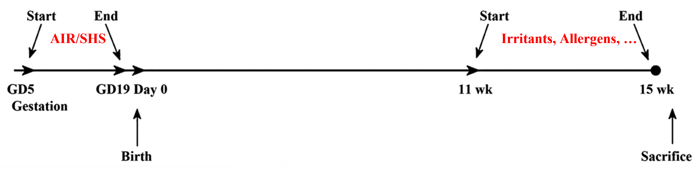
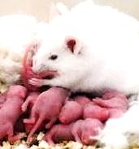
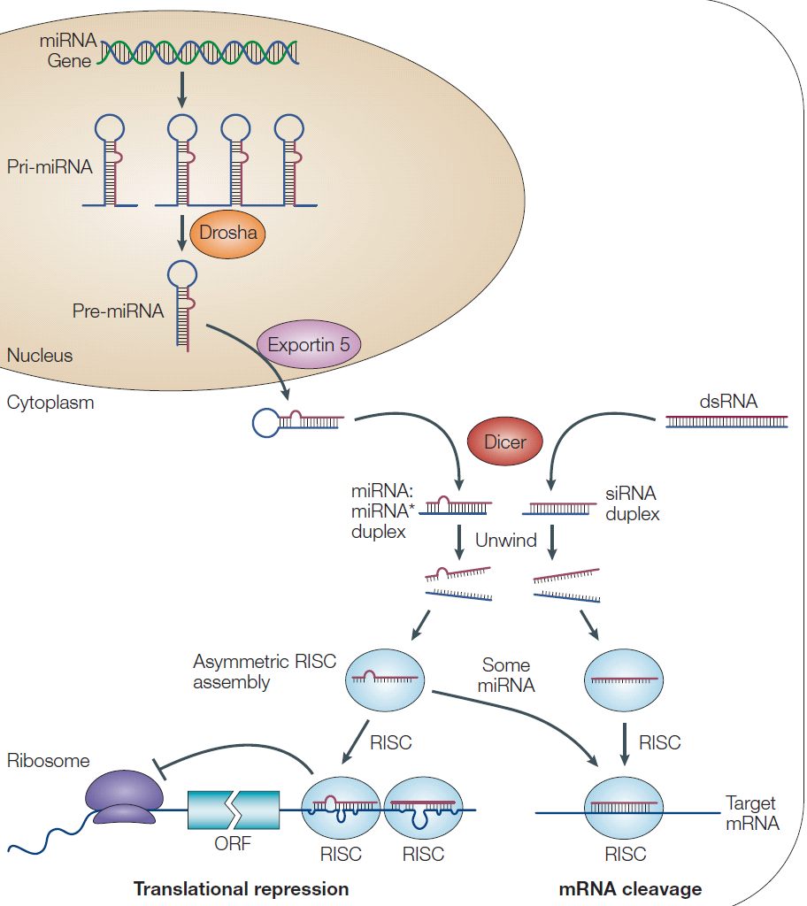
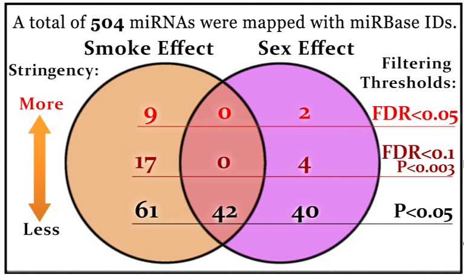
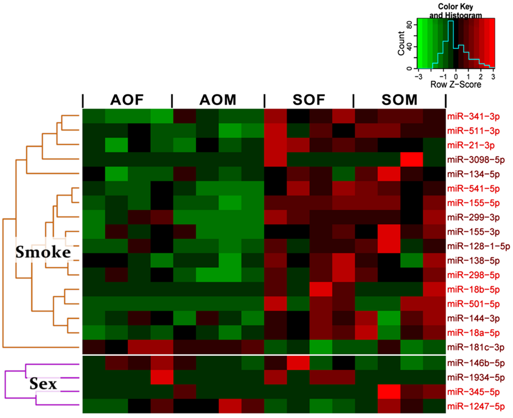
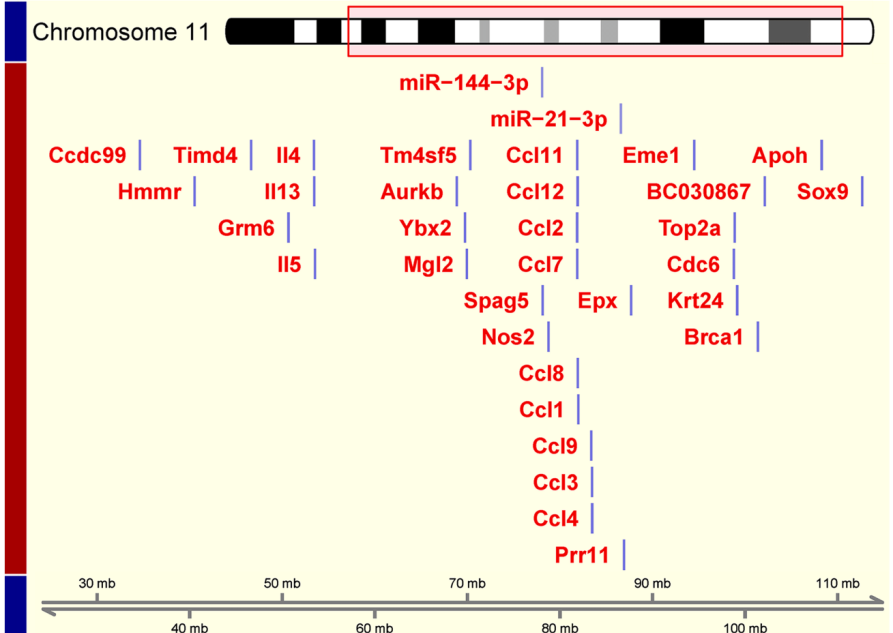
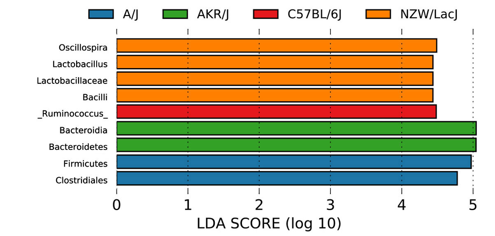
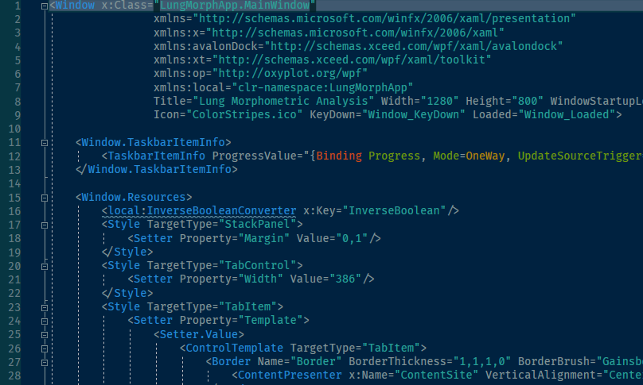
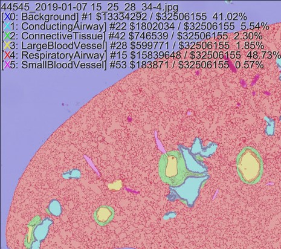

Integrated Omics, Machine Learning,
and Data Mining


Rui Xiao, Ph.D.
Principal Scientist
Informatics & Predictive Sciences
Bristol Myers Squibb
2022-08-05
Selected Publications
- Xiao R, Goldklang MP, Stearns KN, D'Armiento JM. Deep Learning in Computer Vision Provides Valuable Insights and Improved Efficiency for Lung Cytology and Histopathology. Am J Respir Crit Care Med. 2019;199:A5761
- Goldklang MP, Tekabe Y, Zelonina T, Trischler J, Xiao R, Stearns K, Rodriguez K, Shields A, Romanov A, D'Armiento JM, Johnson LL. Single-photon emission computed tomography/computed tomography imaging of RAGE in smoking-induced lung injury. Respir Res. 2019 Jun 10;20(1):116.
- Dunham-Snary KJ, Sandel MW, Sammy MJ, Westbrook DG, Xiao R, McMonigle RJ, Ratcliffe WF, Penn A, Young ME, Ballinger SW. Mitochondrial - nuclear genetic interaction modulates whole body metabolism, adiposity and gene expression in vivo. EBioMedicine. 2018 Oct;36:316-328
- Xiao R, Goldklang MP, D'Armiento JM. Reply: Parenchymal Airspace Profiling Has Its Merits and Is a Valuable Addition to Existing Methods for Lung Morphometry. Am J Respir Cell Mol Biol. 2017 Jul;57(1):132-133.
- Noël A, Xiao R, Perveen Z, Zaman H, Le Donne V, Penn A. Sex-specific lung functional changes in adult mice exposed only to second-hand smoke in utero. Respir Res. 2017 Jun 27;18(1):104.
- Goldklang MP, Tekabe Y, Zelonina T, Trischler J, Xiao R, Stearns K, Romanov A, Muzio V, Shiomi T, Johnson LL, D'Armiento JM. Single-Photon Emission Computed Tomography/Computed Tomography Imaging in a Rabbit Model of Emphysema Reveals Ongoing Apoptosis In Vivo. Am J Respir Cell Mol Biol. 2016 Dec;55(6):848-857.
- Xiao R, Goldklang MP, D'Armiento JM. Parenchymal Airspace Profiling: Sensitive Quantification and Characterization of Lung Structure Evaluating Parenchymal Destruction. Am J Respir Cell Mol Biol. 2016 Nov;55(5):708-715.
- Xie T, Liang J, Liu N, Huan C, Zhang Y, Liu W, Kumar M, Xiao R, D'Armiento J, Metzger D, Chambon P, Papaioannou VE, Stripp BR, Jiang D, Noble PW. Transcription factor TBX4 regulates myofibroblast accumulation and lung fibrosis. J Clin Invest. 2016 Aug 1;126(8):3063-79.
- Xiao R, Noël A, Perveen Z, Penn AL. In utero exposure to second-hand smoke activates pro-asthmatic and oncogenic miRNAs in adult asthmatic mice. Environ Mol Mutagen. 2016 Apr;57(3):190-9.
- Noël A, Xiao R, Perveen Z, Zaman HM, Rouse RL, Paulsen DB, Penn AL. Incomplete lung recovery following sub-acute inhalation of combustion-derived ultrafine particles in mice. Part Fibre Toxicol. 2016 Feb 24;13:10.
- Xiao R, Perveen Z, Rouse RL, Le Donne V, Paulsen DB, Ambalavanan N, Penn AL. In utero exposure to second-hand smoke aggravates the response to ovalbumin in adult mice. Am J Respir Cell Mol Biol. 2013 Dec;49(6):1102-9.
- Nelson P, Ngoc Tran TD, Zhang H, Zolochevska O, Figueiredo M, Feng JM, Gutierrez DL, Xiao R, Yao S, Penn A, Yang LJ, Cheng H. Transient receptor potential melastatin 4 channel controls calcium signals and dental follicle stem cell differentiation. Stem Cells. 2013 Jan;31(1):167-77.
- Xiao R, Perveen Z, Paulsen D, Rouse R, Ambalavanan N, Kearney M, Penn AL. In utero exposure to second-hand smoke aggravates adult responses to irritants: adult second-hand smoke. Am J Respir Cell Mol Biol. 2012 Dec;47(6):843-51.
- Bui A, Xiao R, Perveen Z, Kleinow K, Penn A. Zebrafish embryos sequester and retain petrochemical combustion products: developmental and transcriptome consequences. Aquat Toxicol. 2012 Feb;108:23-32.
LSU-PhD
Physiological responses, transcriptomic, epigenomic consequences on adult mice exposed in utero to smoke exposure - Inflammation, Asthma, ...
Smoking prevalence and detrimental effects
- According to "Pregnancy Risk Assessment and Monitoring System, 2010."
- 25% of adults smoke regularly;
- 10.7% females smoke during last 3 months of pregnancy.
- Smoke exposure is a major risk factor for chronic lower respiratory disease and cancer, both of which are leading causes of death in the US.
- Epidemiological studies have associated in utero or prenatal exposure to second-hand smoke (SHS) with altered lung function and exacerbated asthmatic responses in children.
Animal models to study the effects of in utero smoke exposure
Animal experiments can be designed to: i) expose pregnant female mice to side-stream smoke during day 6-19 of gestation; ii) assess the postnatal or adult responses to environmental stressors. 
Adult Allergen, Ovalbumin, (AIR/SHS, OVA, Female/Male)
- Physiological Responses (airway hyper-responsiveness, breathing frequency)
- Transcriptome (microarray, mRNA-seq)
- Epigenome (miRNA-seq)
SHS-OVA groups exhibited increased airway hyper-responsiveness and decreased breathing frequency
† (SOM vs SOF, sex difference) @ 3,6,12 for airway hyper-responsiveness (AHR).
‡ (SO vs AO, female and male pooled) @ 6,50 for AHR, @ 25 for breathing frequency (f).
Comparison between microarray and RNA-seq for transcriptome profiling
Advantages of RNA sequencing , compared to microarray:
- Increased sensitivity: actual counts vs fluorescent intensity.
- Unbiased detection: no pre-designed probes needed and suitable for RNAs of all sizes, including messengerRNAs (mRNA) and microRNAs (miRNA).
Our findings also largely confirmed the increased sensitivity of RNA-seq
Across pairwise comparisons with different baseline expression levels:
- Medium-high correlation for top 25% high abundance genes: orange dots
- Medium-low correlation for middle 50% : green dots
- Very-low correlation for bottom 25% low abundance genes: blue dots

Differentially expressed genes were identified for SOF vs AOF and SOM vs AOM.
Biplot of both pairwise comparisons, labels: FDR<0.05.
There are more up-regulated genes and more differentially expressed between males.
in utero SHS exposure modulated important biological functions and canonical pathways.
Analyzed and visualized in Ingenuity pathway analysis (IPA).
All genes identified in the analysis were up-regulated.
Color intensities reflect SOM vs AOM.
Bars in brackets:
Left: SOF vs AOF
Right: SOM vs AOM.
Potential epigenetic regulations by miRNAs
miRNAs are short noncoding RNAs that function as posttranscriptional modulators of gene expression by either promoting mRNA degradation or blocking protein translation.
miRNA profiling revealed more miRNAs dysregulated by in utero SHS exposure than those biased by sex.
GLM: ~ Smoke * Sex
 In utero SHS exposure dysregulates miRNAs that are associated with lung inflammation and cancer.
♀: SOF versus AOF, ♂: SOM versus AOM. N≥5 in each group for qRT-PCR. FDR<0.05.
| miRNAs (mmu-) | Associated lung diseases & disorders | qRT-PCR Fold change |
|---|---|---|
| miR-155-5p | Cancer (Tang et al. 2013; Yang et al. 2013); Lung inflammation (Tili et al. 2007); | ♀: ↑2.4* ♂: ↑2.0* |
| miR-541-5p | ♀: ↓1.3 ♂: ↑1.8* | |
| miR-511-3p | Lung inflammation (Squadrito et al. 2012); Cancer (Zhang et al. 2012); | ♀: ↑1.3 ♂: ↑1.7* |
| miR-21-3p | Lung inflammation (Lu et al. 2009; Moschos et al. 2007); Cancer (Seike et al. 2009; Tang et al. 2013; Yang et al. 2013) | ♀: ↑2.0 ♂: ↑2.4* |
| miR-298-5p | ♀: ↑2.0* ♂: ↑2.5* | |
| miR-18a-5p | Cancer (miR-17~92 cluster) (He et al. 2005; Hwang and Mendell 2007; Olive et al. 2010) | ♀: ↑1.8* ♂: ↑1.6* |
| miR-18b-5p | ♀: ↑1.8 ♂: ↑3.6* | |
Major cytogenetic bands were screened for transcriptional activity of both mRNA and miRNA.
Cytogenetic band information (114 in mouse) associated with genes and miRNAs is great resource to investigate the transcriptional activity over different chromosome locations.
Inceased transcriptional activity points to a cluster of pro-inflammatory genes and miRNAs.
Chr11C is enriched with upregulated genes and miRNAs.
16 tumor suppressor genes are predicted targets and show inverse correlation with oncomir expression.
Spearman’s r ≤ -0.7, |Fold change| ≥ 1.5
Zhao et al. 2013. TSGene: a web resource for tumor suppressor genes. Nucleic Acids Res. 41:D970-976.
Summary
| Integrated Omics | Machine Learning | External Database | Workflow Automation | |
|---|---|---|---|---|
| LSU-PhD | Phenome (lung); Transcrptome; Epigenome | Gene (WebGestalt); microRNA (miRBase, TargetScan) | VBA macro; VB/WinForm app |
CU-PostDoc
Lung injury and structural changes due to prolonged smoke exposure - Acute lung injury, Emphysema, ...
Areas of research at CU
The effects of adult chronic smoke exposure can be better examined by:
- investigating microbiome to identify microbial organisms that are associated with disease progression and susceptibility differences.
- developing sensitive, unbiased, and robust computational methods for detecting changes in the lung.
- Find suseptibity differences to smoke exposure across different strains of mice:
- Microbiome (16S rRNA-seq) – Phenome
- Extend capability of biomedical imaging
- Lung morphometry, automated, unbiased, sensitive - Early detection
- Tissue segmentation and cell categorization - Performance improvement
Hypothesis: Baseline microbiome profiles differentially modulate responses to cigarette smoke exposure
Susceptibility to smoke induced lung injury differs across human population.
Comparing differences across baseline vs response enables us to learn about microbiome predisposition.
We look into the gut microbiome (abundant, well-characterized) across 4 strains of mice.
Baseline strain-specific differences in the gut microbiome.
Most significant taxa tested in LEfSe (LDA>4.2):
More inflammation and microbiome changes were found in AKR/J and C57BL/6J mice.
Beta diversity: variation of microbial communities, difference in taxonomic abundance profiles from different samples. UniFrac: sequence distances (phylogenetic tree), based on the fraction of branch length shared between two samples or unique to one or the other sample.
Proinflammatory microbes induced by smoke exposure have high baseline in resistant strain.
Hygiene hypothesis: early exposure to particular microorganisms protects against allergic diseases by contributing to the development of the immune system. A lack of exposure is thought to lead to defects in the establishment of immune tolerance.
A/J: Resistant strains with mild inflammation in the lung and blood.
AKR/J: Susceptible strains with severe inflammation in the lung and blood.
Lung Morphometric Analysis - Gridline Counting
Traditionally, people perform gridline counting to assess Mean Linear Intercept (MLI) to approximate the average airspace (µm). Drawbacks: labor intensive, time consuming.
Computer vision and machine learning can be easily applied to extract airspaces and features.
Computer vision can instantly extract hundreds of enclosed airspaces and provide several important features for further analysis.
Area is the most representative, robust (not easily biased by scaling), widely-supported (across many software packages) feature.
| ID (#) | Center of Gravity |
Width | Height | Area | ... |
|---|---|---|---|---|---|
| 1 | ... | ... | ... | ... | ... |
| 2 | ... | ... | ... | ... | ... |
| ... | ... | ... | ... | ... | ... |
Unweighted size distribution pointed to a subpopulation of small airspaces
Small, red: µ=2.84, σ=0.49
$Area_{small} = 10^{2.84} = 631 \mu m^2$
$\begin{align}Diameter_{small} &=2*\sqrt{Area_{small}/\pi} \\
&=30µm
\end{align}$
This is inline with the size of a single alveolus.
"C57BL/6J mice (~35µm) A/J strain (~38µm)"
Soutiere et al. 2004.
Differences in alveolar size in inbred mouse strains.
Respir Physiol Neurobiol 140(3):283-91.
Area-weighted size distribution identified two subpopulations of medium & large airspaces
Small, dotted: µ=2.84, σ=0.49
Medium, red: µ=3.38 σ=0.48
Large, green: µ=4.34 σ=0.30
$Area_{Medium}=10^{3.38}=2399\mu m2$ (4X)
$Diameter_{Medium}=56\mu m$ (2X)
$Area_{Large}=10^{4.34}=21878\mu m2$ (35X)
$Diameter_{Large}=167\mu m$ (6X)
These sizes are inline with the alveolar sac and alveolar duct / area of destruction.
Colored as alveolus, alveolar sac, and alveolar duct & area of destruction.
Ductal/Destructive Fraction (DF) is a more sensitive and robust indicator than MLI.
Healthy control
MLI=62µm DF=23%
Emphysema
MLI=83µm (↑34%) DF=44% (↑91%)
Prototyped in R, further developed into a C#/WPF desktop-app for better speed and user experience.
~1000 lines of XAML code for UI
~3000 lines of C# code for computation

Convolutional neural network is capable of tissue segmentation and cell classification.
CNN applies a sliding windows to first extract low-level features and layer-by-layer captures high-level features enough to perform classification, segmentation, and instance/object detection tasks.
semantic <--> uncountable tissue
instance <--> countable cells
Precise segmentation can be achieved and optimized based on UNet architecture.
Training input is the same while the B&W training output can be the background, two normal histological regions of the lung, or pathological lesions.
CNN backbone optimization: VGG16 -> ResNet -> DenseNet
Six-Color Segmentation Map: Multi-Class Accuracy 96%
Cell classification, counting and outlining can be performed via Mask R-CNN
Summary
| Integrated Omics | Machine Learning | External Database | Workflow Automation | |
|---|---|---|---|---|
| LSU-PhD | Phenome (lung); Transcrptome; Epigenome | Gene (WebGestalt); microRNA (miRBase, TargetScan) | VBA macro; VB/WinForm app | |
| CU-PostDoc |
Microbiome (gut, lung) |
CV (airspace feature); GMM (airspace categorization); DL/CNN (tissue seg, cell recog) | R script for gridline counting; C#/WPF app for parenchymal airspace profiling |
Asuragen
Unified and accurate genetic variant calling and risk assessment pipeline - Next-gen & 3rd-gen sequencing, bioinfo pipeline engineering and algorithm development.
Summary
| Integrated Omics | Machine Learning | External Database | Workflow Automation | |
|---|---|---|---|---|
| LSU-PhD | Phenome (lung); Transcrptome; Epigenome | Gene (WebGestalt); microRNA (miRBase, TargetScan) | VBA macro; VB/WinForm app | |
| CU-PostDoc |
Microbiome (gut, lung) |
CV (airspace feature); GMM (airspace categorization); DL/CNN (tissue seg, cell recog) | R script for gridline counting; C#/WPF app for parenchymal airspace profiling | |
| Asuragen |
Genome (human) |
DL (variant calling) | gnomAD; ClinVar | Unified bioinfo pipeline built with Nextflow |
MyoKardia
Omics profiling across different compound treatments and animal models of cardiovascular diseases.
Summary
| Integrated Omics | Machine Learning | External Database | Workflow Automation | |
|---|---|---|---|---|
| LSU-PhD | Phenome (lung); Transcrptome; Epigenome | Gene (WebGestalt); microRNA (miRBase, TargetScan) | VBA macro; VB/WinForm app | |
| CU-PostDoc |
Microbiome (gut, lung) |
CV (airspace feature); GMM (airspace categorization); DL/CNN (tissue seg, cell recog) | R script for gridline counting; C#/WPF app for parenchymal airspace profiling | |
| Asuragen |
Genome (human) |
DL (variant calling) | gnomAD; ClinVar | Unified bioinfo pipeline built with Nextflow |
| MyoKardia | Phenome (heart); Transcriptome | Gene (clusterProfiler) | R/Shiny app |
BMS
Diverse exposure to target nomination, novel therapeutic modality, consortium datamining, ...
Summary
| Integrated Omics | Machine Learning | External Database | Workflow Automation | |
|---|---|---|---|---|
| LSU-PhD | Phenome (lung); Transcrptome; Epigenome | Gene (WebGestalt); microRNA (miRBase, TargetScan) | VBA macro; VB/WinForm app | |
| CU-PostDoc |
Microbiome (gut, lung) |
CV (airspace feature); GMM (airspace categorization); DL/CNN (tissue seg, cell recog) | R script for gridline counting; C#/WPF app for parenchymal airspace profiling | |
| Asuragen |
Genome (human) |
DL (variant calling) | gnomAD; ClinVar | Unified bioinfo pipeline built with Nextflow |
| MyoKardia | Phenome (heart); Transcriptome | Gene (clusterProfiler) | R/Shiny app | |
| BMS | Translatome as in Ribo-seq | NLP (medical records); Ranking (targets); Feature importance (biomarkers); VAE for AAV capsid evo. | BioBank, Heart Failure Consortium | RMarkdown-based analysis & visualization toolkit |
| In-depth profiling to study omics interactions and disease mechanism. | Leverage AI for improved assessment and optimized path. | Mine dataset for target ideation or put studies in a broder context. | Work efficiently and enpower the entire team. |